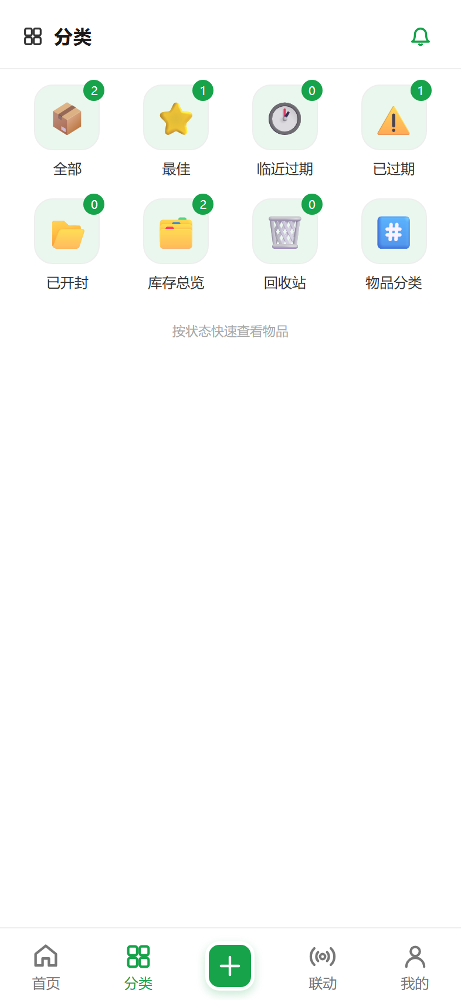
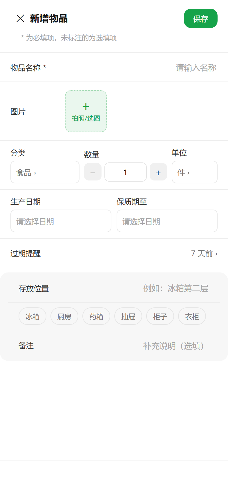
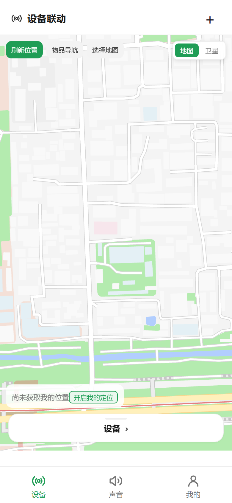
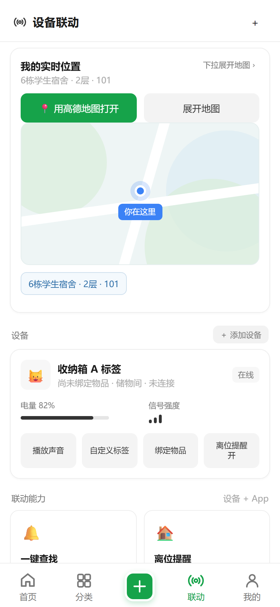
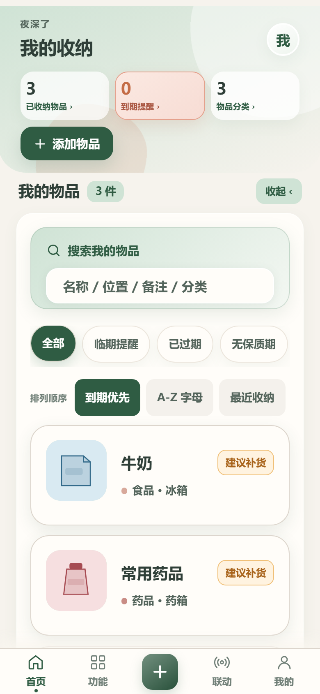
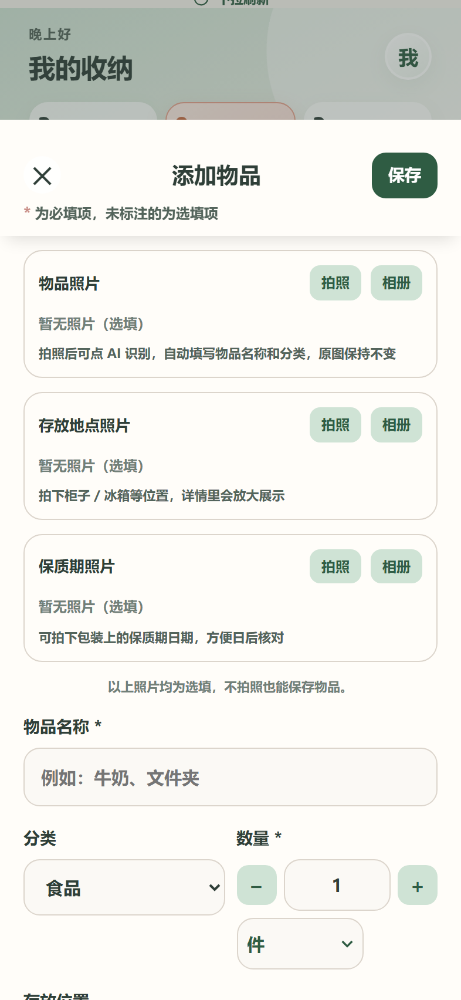
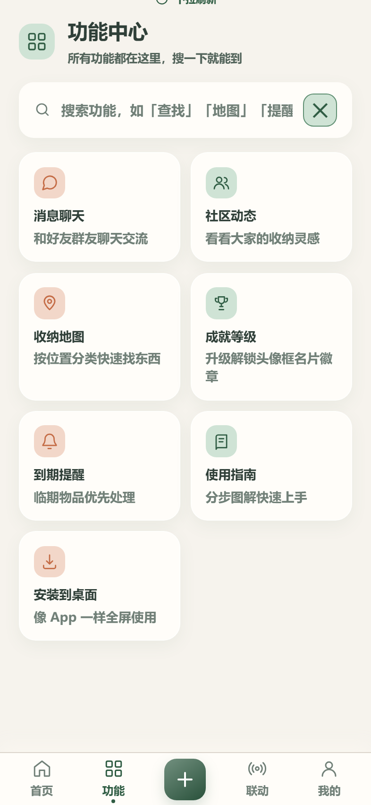
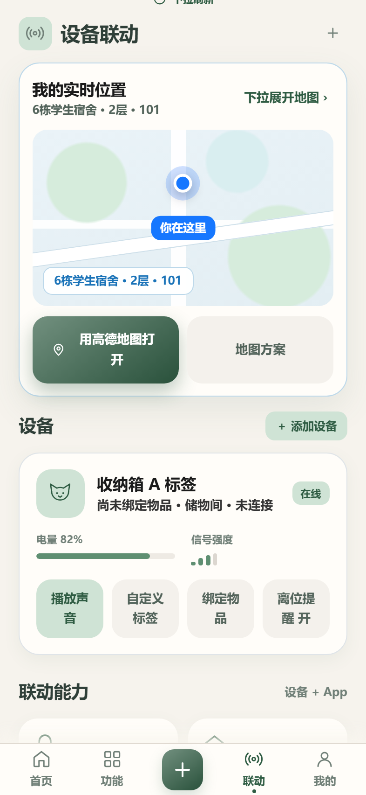
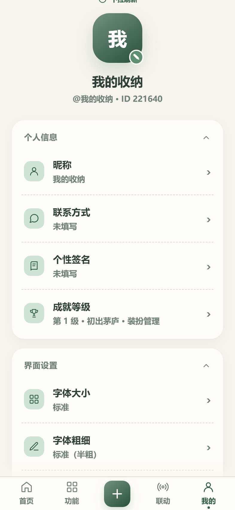
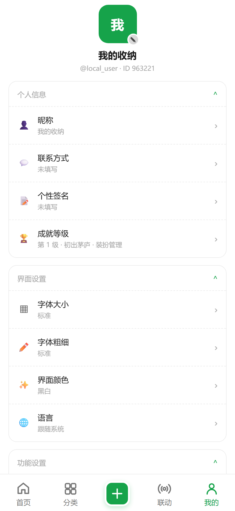

01CAPTURE
Log it in seconds
Snap a photo, pick a category, set an expiry date. The form remembers your usual choices so next time takes even less.
PRODUCT DESIGN CASE STUDY · 2026
XUNJI is a local-first app that remembers what you have, where it lives, and when it runs out. No account. No cloud. Just you and your things.
Explore the app↘


THE IDEA
Most storage apps ask you to organise more. XUNJI asks you to remember less — and quietly keeps an eye on expiry dates, opened packs, and where everything went.
01 / THE APP
Everything happens on the device. The interface stays out of the way until you need it.
Snap a photo, pick a category, set an expiry date. The form remembers your usual choices so next time takes even less.
Twelve categories, a plain-language search, and voice input. Your things stay where you left them — you just know where that is.

XUNJI tells you when something is about to expire. It never demands a routine, never scores you, and can be turned off completely.
02 / THE DECISIONS
Everything lives in the browser's local storage. No sign-up, no sync, no data leaving the device. Privacy isn't a settings page — it's the architecture.
The thing people actually lose track of isn't the object — it's the date. So the app tracks best-before, opened state, and quantity, not just a pretty inventory.
A monochrome interface with a single green signal for actions and alerts. The colour means the same thing everywhere, so nothing competes for attention.
A PWA that can sit on the home screen like a native app, but updates itself silently and works offline. No app store, no friction.
03 / THE PROCESS
Twelve interviews with students who share rooms. The findings were less about tidiness and more about the quiet anxiety of not knowing what you have.
USER PERSONA / 01
“Things get lost, and the mess comes back a week later.”
Representative quote · Interview P4
Wants a clear room without spending every weekend sorting it.
Can't remember where things went; buys duplicates; finds expired food too late.
Occasional big clean-ups, then everything slowly drifts back.
A low-effort way to record, find, and check what's still good.
Affinity mapping · 12 interview transcripts
“Where did I put the charger?” “Bought the same thing twice.”
“It looked fine.” “Found the medicine after it expired.”
“Boxes are the wrong size.” “Dividers never line up.”
“Two weeks and it's back to normal.” “Putting things away is the hard part.”
“Sorting is exhausting.” “I don't even know where to start.”
Journey map · the emotional curve tells the real story
Emotion extracted from interview language
XUNJI exists to lift that last point. Not by organising harder — by making check-out automatic, and putting-back almost effortless.
Every feature traces back to a sentence someone said
04 / BEFORE & AFTER
Pick a page, then drag the handle. Left is 2.0, right is 3.0. The tests told us exactly what to remove.

Three overview cards and stacked filters → a direct item list with one search box.

Three photo sections and a long form → one photo slot, paired fields and quick location tags.

Chat, friends and community hub → removed. One tester put it plainly: nobody asked for it.

Same device card, now with a plain-language explainer of what linking actually does.


Signature and achievements → settings grouped by interface and function. Everything has a place.
04 / USABILITY TEST
6 participants, 25 minutes each, four tasks. Version 2.0 and 3.0, side by side. What they struggled with changed what we built.
From last week's keys to a bottle of perfume that took one to two hours to find — the problem was real, frequent, and solved by remembering harder.
Share of participants who mentioned each issue · n=6
Search itself worked: 6/6 completed the find task. The friction was almost entirely at the entrance — seeing where to add, and understanding the form.
Five screens, rebuilt around what the tests showed
FINALLY
XUNJI doesn't promise a tidier life. It just means the next time you reach for something, you'll know exactly where it is — and whether it's still good.
Open the app ↗